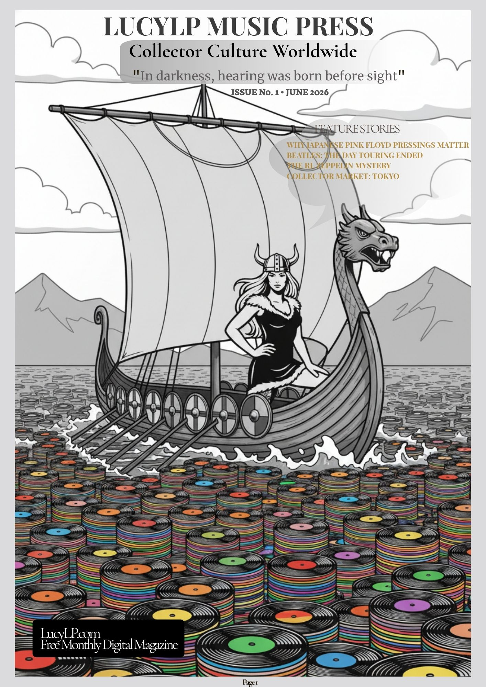
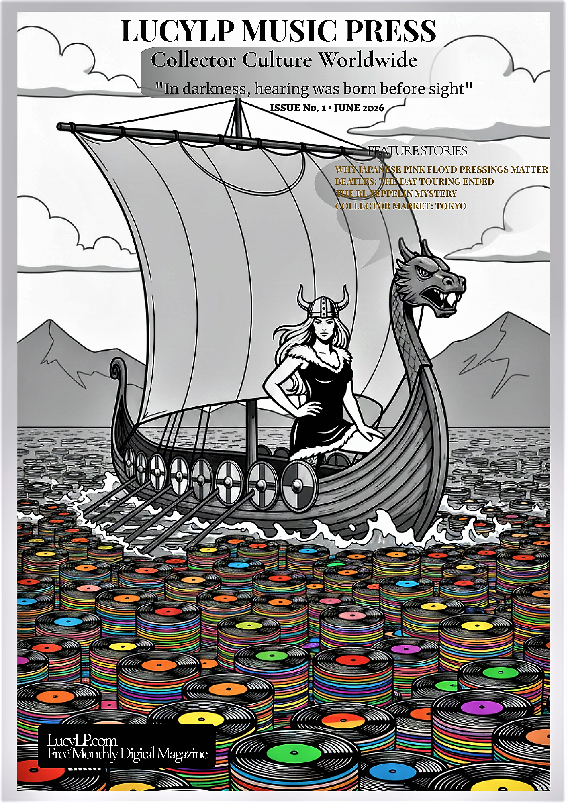

Online Magazine Reader
Issue No.1

Independent Digital Magazine
About LucyLP Music Press
LucyLP Music Press is an independent digital magazine dedicated to vinyl culture, rare records, Japanese pressings, collector stories and record history from around the world.